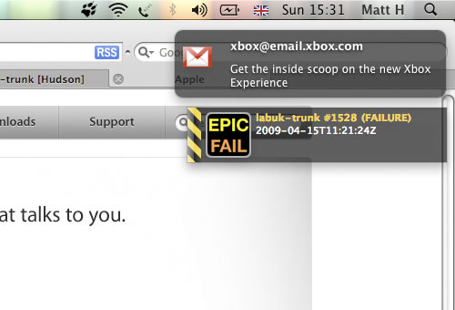

Archive for the ‘programming’ Category.

I recently put the finishing touches on my UnimotionPlugin project. It’s essentially a javascript wrapper around the Unimotion C library, making it good for use in Mac OS X Dashboard widgets.
Unimotion taps into the sudden motion sensor found in Apple’s portables. This sensor reads the orientation and movement of your Macbook, presumably so in the event of you dropping it OS X will do something clever like stop your hard disk spinning to save it from damage. Reading this data opens up some pretty interesting development opportunities
The example widget I made with the software is a fairly unimaginative seismometer but I think there’s a lot more potential.
Developing Dashboard widgets is great fun, you get to use html, css and javascript, plus you know your target browser (it’s Safari) so can use all the latest kit such as the canvas tag. But also, with a bit of mapping between javascript and C libraries can easily take advantage of all the unix environment has to offer, which for me is where the fun comes in. Previously I have used a Dashboard widget to control my Arduino by opening up a socket server talking over USB via javascript, which is kind of cool.
However, from a developers perspective, the Dashboard as an environment does seem limited - if only because it’s a place for very small apps that you’ll use for a very short time. Another interesting avenue to explore would be to write a small Cocoa application that holds an embedded WebKit instance, you could map through to C / Objective-C for all the heavy stuff but build your interface in html and javascript. I’m sure somebody like me, who’s background is in javascript and has had a mare of a time trying out Objective-C would find this useful.
I’ve finally cottoned on to the Growl app on OSX, a nice little notification system that allows applications to ‘unintrusively tell you when things happen’. Looking into it a little I realised I could couple Growl with a few atom feeds and enable myself to be notified to events such as a new email coming into Gmail or our project’s build failing on Hudson. Introducing growl-atom :

Whether this is a good idea or not is questionable. Entourage - which I use at work - fires a little notification with every new email I receive. This can get more than a little annoying when the Friday afternoon ‘name my hamster’ type discussions kick off. Never the less after a few fun hours coding I have a nice little system that will tell me when (hopefully) important stuff happens.
The code is up on Github if anybody wants to install it. It’s a simple Ruby gem (thanks to visionmedia for the ruby-growl gem), combined with a config file and Apple’s answer to the cron job which is something called a LaunchAgent. Check it out!
Visit the growl-atom page on Github
I had a couple of tickets needing doing for the XML Directory Listing project I have on Googlecode. Thanks again to all those that submitted the tickets, the new 0.2 release resolves these I hope:
- Change to in / out file handlers on Ant task, should work more like the native tasks
- Removed DTD from XML output
- Added ability to configure character set on XML declaration, defaulting to UTF-8
- Possible fix to bug in XML output on Ubuntu Hardy
I was wondering recently whether this solution is a little over engineered and how if I had to do it again I’d go for something like a simple ruby script - after all it’s not that common a task. However I’ve used this software again at work recently to generate some documentation from inline comments in XSLT and the Ant integration is really quite useful. Hope others find a use for it too.
Visit the XML Directory Listing application page on Googlecode